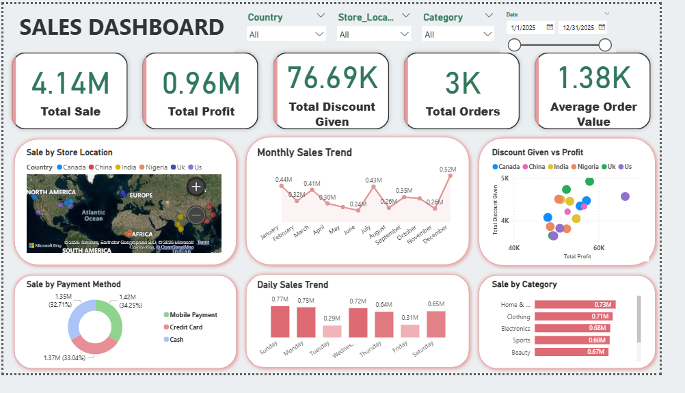

Sales and profit dashboard
Where do the sales and the margin actually come from?
I built an interactive Power BI dashboard with KPI cards, a store-location map, daily and monthly trends, and Top 10 views of products, stores and sales reps. The data was prepared and queried in MySQL using joins, aggregations and grouping.
Finding: the top 3 categories drive 51% of profit, and 18.6% of all discounts sit in Home & Kitchen, which puts pressure on margin there.
